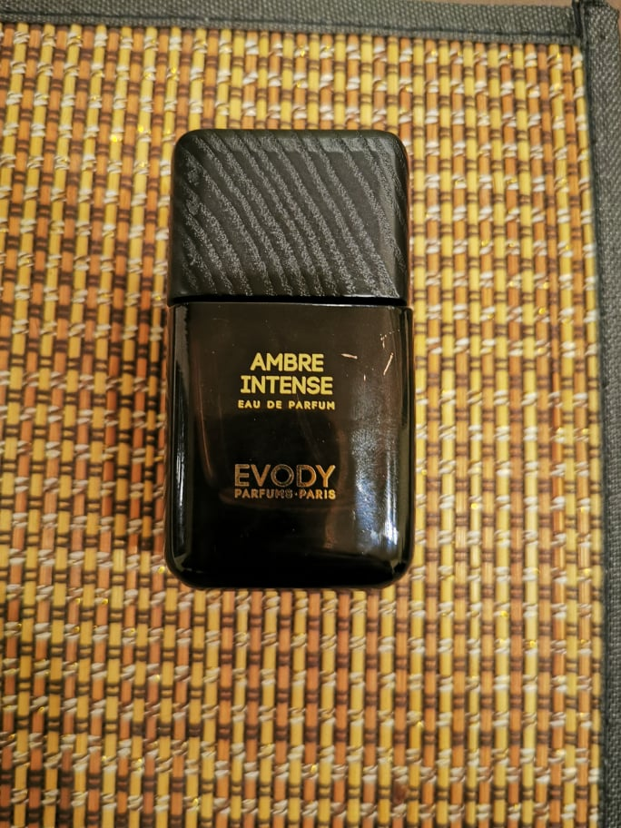
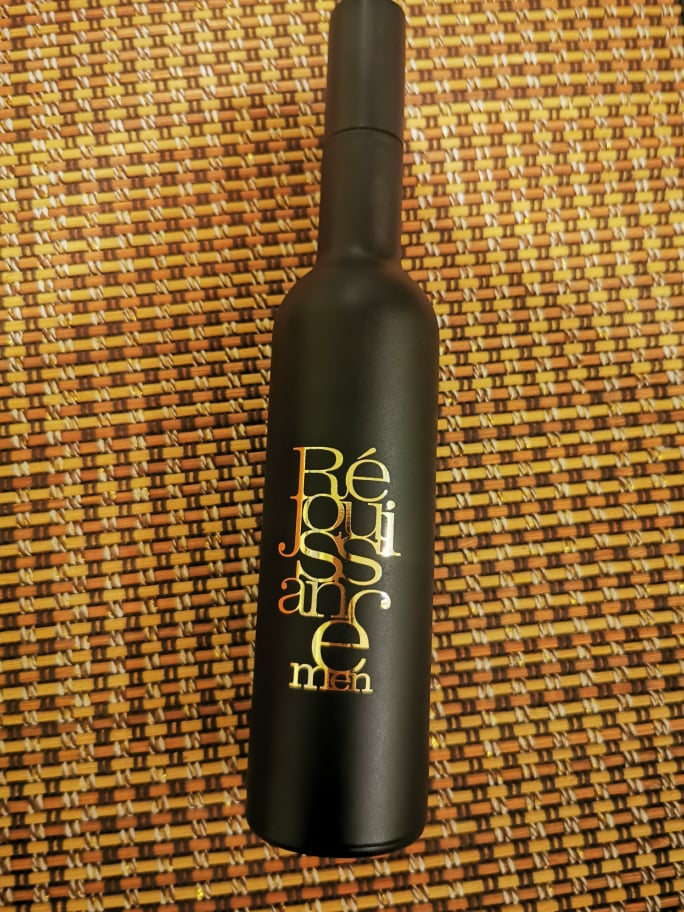
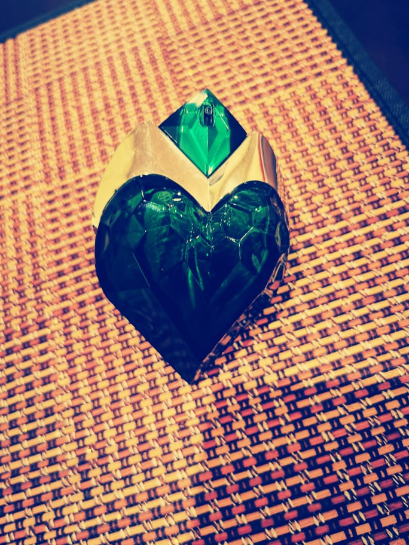
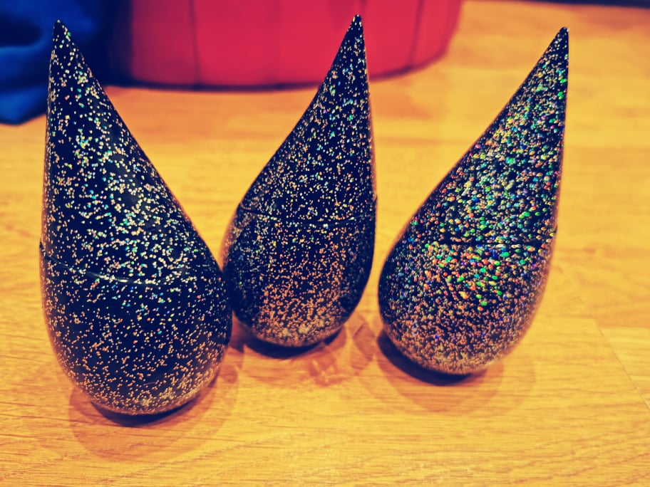

Vardas: Kotryna Pavardė: Sipavičienė Statusas: Užimta, užkariauta, pavergta kvepalų. Kur galima aptikti: Ten kur nosį kutena malonūs kvapai. Trumpas apibūdinimas: Visiška kvepalų maniakė. Taigi... Noriu su Jumis pasidalinti savo istorija - meilės kvapams istorija. Kvepalų pasauly atsiradau netikėtai. Visos gražios istorijos gimsta taip... iš jausmo. Pirmas kartas, kai pajutau kvepalų galią buvo aišku paauglystėje. Pamenu tada sutikau tikrą kvapnuolį. Ir pirmą kartą supratau, kiek įtakos gali tūrėti žmogaus pasirinktas kvapas. Prisipažinsiu iki dabar tai vienas svarbesnių kriterijų bendraujant su žmonėmis. Kvepalai ne tik smagus žaidimas. Kvepalai tai įrankis, kuriuo galima naudotis - taip taip, jums nepasigirdo. Nuo senų senovės kvapai lydėjo žmogų. Seniau žmogaus uoslė buvo galingas įrankis, kuris padėdavo įvairiuose situacijose. Medžiojant, ieškant prieglobsčio, renkantis partnerį ir pan. Kadangi tuo metu žmonės daugiau tuo naudojosi, jų uoslė buvo išvystyta labiau. Mano užduotis: Noras pasidalinti tuo ką žinau, pasidalinti geriausiais kvapais, patarimais ir žinoma išmokyti jus naudotis kvapais. 😊 Tad pradėkim. Šį kartą pasidalinsiu kvapais, kurie ypatingai paveiks Jūsų pasitikėjimą savimi, šie kvepalai suteiks Jums vidinių jėgų ir pagerins nuotaiką. Tai bus Jūsų vizitinė kortelė, einant į darbo pokalbį ar laukiant svarbaus susitikimo. Su šiais kvapais jūs spinduliuosite pasitikėjimą, žmonės labiau tikės tuo ką sakote. Ši kvepalų kategorija bus asmenybėms nuo 30 metų, užimantiems aukštesnes pareigas, mėgstantiems išsiskirti. Energingiems, bendraujantiems.. Jei tai Jūsų aprašymas imkit ir išbandykite šiuos kvapus.
EVODY Ambre Intense Pirminės natos: lauro lapai; Širdies natos: smilkalai, pačiulis, santalas; Bazinės natos: ambra, mira. Visiškas medienos ir smilkalų aromatas. Medienos kvapas suteikia šiam kvapui ypatinga švelnumą, rafinuotumą ir prabangą. Smilkalai paverčia jį seksualiu, tačiau tik tiek kiek reika. Santalas užburia savo aistringumu. Tai kvapas – drąsa. Moterims jis suteiks pasitikėjimo, drąsos, šiek tiek vyriškumo. Vyrams: Švelnumo, jausmingumo, noro veikti. Pliusai: Įdomus, ryškus, smilkalinis aromatas. Minusai: Trumpesnis kvapo išsilaikymas. (apie 3val.) Mano įvertinimas: 5,5/10. Esu gan priekabi vertintoja. 😊
YES FOR LOVE Réjouissance for Men Viršutinė nata: pipiras, bergamotė, šafranas, kuminas. Širdies nata: slyva, datulė. Bazinė nata: tonka pupelė, vanilė, ambra, pačiulis. Aromatas paslaptis. Pirmu įkvėpimu jaučiamos uogos. Saldžios, prinokusios. Vėliau pasijunta medienos kvapas, stiprius akordus šoka vanilė, o šafranas…. Mmmm. Šis aroamatas labai seksualus. Ypatingai stiprus. Užtenka keletos papurškimų. Moterims jis galingas ginklas. Pranešimas aš švelni, bet pavojinga. Vyrams vyliojimo ginklas, norit palankumo iš moterų - tai Jūsų kvepalai 😊 Pliusai: Itin idomus, seksualus aromatas. Minusai: Sunkiai surasčiau. Mano vertinimas: 6,5/10
Tierre Mugler AURA Viršutinės natos: bergamotė, rabarbarai. Vidurinės natos: apelsinų žiedai, ylang-ylang gėlės ir kitos žalios natos. Pagrindinės natos: vanilė, mediena, sandalmedis, gintarmedis. Prisipažinsiu šį aromatą pamilau ne iš karto. Pauosčius pirmą kartą jis gerokai atbaidė mano dėmesį, kadangi viskas ką užuodžiau buvo žolės. Tačiau… Tierre Mugler kvepalų namai yra mano numeris vienas. Jokia niša kolkas nelenkia šių namų. Kadangi kainos ir kokybės santykis yra tiesiog wow. Nusprendžiau suteikti šiems kvepalams antrą šansą ir nesuklydau. Taip, pirmas įkvėpis gana keistas. Juntamas žolelių aromatas, nupjautos žolės kvapas. Iš pradžių atrodo, kad tai bus labai lengvas aromatas, tačiau tai netiesa. Žaluma išsisklaido labai greitai ir tada seka vanilės, medienos akordai. Kurie šitam kvape yra ypatingai stiprūs. Tai labai labai stiprus aromatas, tačiau tai pajunti ne iškarto. Šis kvapas toks paslaptingas, kad įsivaizduočiau nežemiškas būtybes kvepiant taip. Labai stipriai jaučiamas žolės, drėgmės kvapas, bet šalia jungiasi ypatingai saldūs ir dūminiai akordai, kas daro šį kvapą nenugalimu. Moterims tai superinis kvapas norint išskirtinumo, dėmesio. Jis priduos joms paslapties, intrigos. Vyrams tai nepriklausomybės, laisvės kvapas. Pliusai: Nežemiškų butybių kvapas, unikalus, drąsus, kitoks. Minusai: Arba nekenti arba dievini šį kvapą. Mano vertinimas: 8,5/10
LA PRAIRIE MIDNIGHT RAIN Viršutinės natos: gvajavos, mandarinai, granatai, frezijos. Vidurinės natos: baltažiedės lelijos, orchidėjos, slyvų žiedai. Pagrindinės natos: pačiuliai, kvapieji auksabarzdžiai, mediena, muskusas. Tai kvepalai - magija. Vienareikšmiškai šie kvepalai patenka į mano top 10 skaniausių kvapų. Ypatingai saldus, šiltas, elegantiškas kvapas. Pirmas įkvėpimas ir tu įsimylėjas. Šis kvapas man toks stebuklingas, įtaigus, užburiantis, seksualus. Ypatingas dėmesys orchidėjoms, lelijoms. Itin moteriškas aromatas. Saldus, bet turi kažko švelninančio, trapaus. Man tai - pavasario nakties aromatas. Pliusai: saldus, erotiškas, itin moteriškas, paslaptingas. Minusai: Kaina. ☹ šie kvepalai šiuo metu yra eksliuziviniai. Jų gamyba nutraukta, tad norint juos įsigyti teks pakloti už 50ml apie 300/400 eur